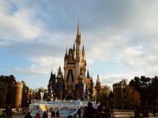
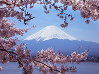
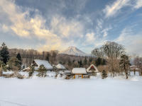
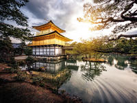
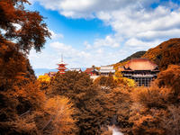
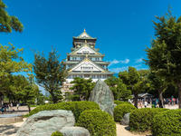
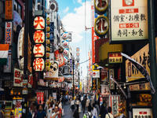

行程介绍
• 行程名称：悠游日本 舒享日本本州乐活7日
• 行程天数：7天6晚
*由于部分城市无法提供国际航班服务，本次行程需从 北京 出发详细行程
Day
1北京 - 东京
航班：CA181 起飞时间：08:20 到达时间：12:30；
用餐： 早餐(无) 午餐(无) 晚餐(无)
住宿： 舒适酒店_东京或周边地区舒适酒店
首都国际机场出发，搭乘国际航班飞往日本东京机场，抵达后导游接机，开始期待已久的日本之行。晚上入住酒店休息。（本日晚餐自理）
Day
2东京
用餐： 早餐(有) 午餐(自理) 晚餐(自理)
住宿： 舒适酒店_东京或周边地区舒适酒店
早餐后，全天自由活动（门票及车费敬请自理，本日无专车和导游）。您可自行前往迪斯尼乐园尽情游玩，尽情感受童话世界的魅力 。或前往东京潮人购物区原宿、池袋等地自由观光。（方便游玩，午晚餐敬请自理）
东京迪斯尼乐园：开幕于1983年，是一座以睡公主城堡为中心，占地广达46公顷的童话世界，每年吸引大批游客慕名前往游玩，她让人们忘却了年龄的限制，将大家带领到那魔幻与欢乐的王国。迪士尼乐园分为世界市集、探险乐园、西部乐园、新生物区、梦幻乐园、卡通城及未来乐园等7个区，园内的舞台以及广场上定时会有丰富多彩的化装表演和富趣味性的游行活动。

迪斯尼乐园
Day
3东京 富士山 中部
用餐： 早餐(有) 午餐(有) 晚餐(有)
住宿： 舒适酒店_滨名湖湖畔广场酒店 或周边地区同级酒店
早餐后，前往静谧美丽的皇居广场，在二重桥前拍照留念（不少于40分钟）。随后在世界三大繁华街之一的银座大街（不少于90分钟）渡过悠闲的午后时光，乘车前往富士山地区，前往游览静谧美丽的忍野八海（不少于30分钟），特别安排登临富士山五合目，与日本神山零距离亲密接触（不少于30分钟）。后乘车前往中部地区，入住温泉酒店休息。品美味料理，享受温泉，舒缓旅途的疲劳。
温馨提示：如遇富士山五合目封路或天气原因不能参观，则改为参观富士山资料馆，特此说明。
银座：世界三大繁华街之一，是东京最繁华的商业区，现代日本的代表坐标。大道两旁的百货公司和各类商店鳞次栉比，专门销售高级商品。后街有很多饭店、小吃店、酒吧、夜总会。
皇居：历代天皇及其家人的住所。皇居的大部分不开放参观，平时游人只能在皇宫外苑外的皇宫广场附近游览一番。整个皇居区域林木葱葱，满目苍翠，实在堪称为都市绿洲。
富士山：被日本人民誉为“圣岳”，是日本民族的象征。整个山体呈圆锥状，一眼望去，恰似一把悬空倒挂的扇子，日本诗人曾用“玉扇倒悬东海天”、“富士白雪映朝阳”等诗句赞美它。富士山由山脚到山顶分为十合，由山脚下出发到半山腰称为五合目，利用巴士可上到2305米的五合目，这里的景色一年四季随季节变化而不同，日出日落，气候变化，都会令富士山瞬间呈现不同的身影，千姿百态！
平和公园：平和公园是典型的日式庭园建筑，广植各种树木及花卉，仿如人间美境。天气晴朗时，富士山的壮丽景色可一览无遗。
忍野八海：这里错落有致地散布着八个清泉，水质清冽甘甜，被誉为“日本九寨沟”。

富士山

忍野八海
Day
4中部 京都 大阪
用餐： 早餐(有) 午餐(有) 晚餐(有)
住宿： 舒适酒店_关西地区舒适酒店
早餐后，前往京都，特别安排游览两大世界遗产—金阁寺（不少于30分钟）午后，特别安排游览-清水寺（不少于50分钟），寺庙从本堂大殿附近山坡上到寺内的1000多棵红叶树，为静谧的古刹带来浓浓秋意。游走祗园艺伎街（不少于30分钟）,祗园街正中南北走向的一条保持了京都历史古老风貌的著名街道。而后乘车前往大阪，入住酒店休息。
祗园：花见小路通街道是祗园街正中南北走向的一条保持了京都历史古老风貌的著名街道，古香古色、竹篱红墙的茶屋、高级餐馆料亭，店头悬挂有“舞妓”的小红灯笼，令整条街充满了浓郁的花街柳巷情趣，这里是体验京都古文化精华的必游之处。
金阁寺：因为建筑物外包有金箔，故名金阁寺。金阁寺的建筑与园林构造相融合，成为京都的代表性景观，并作为日本国宝被收录进世界遗产名录。
清水寺及坂道街：作为日本国宝被收录进世界遗产名录的清水寺，本身就是一首婉转流淌的风物诗，歌唱着古都京都的旧貌新颜，一砖一瓦都记录着这里岁月的变迁。徜徉在安静祥和的坂道街，信手买来浓郁当地特色的纪念品，古刹，坂道，美景，路人，美好的一切令旅人流连忘返。

祗园

金阁寺

京都清水寺
Day
5大阪 大阪
用餐： 早餐(有) 午餐(有) 晚餐(自理)
住宿： 舒适酒店_?大阪泉佐野中央酒店或同级酒店?
大阪v 早餐后，参观大阪的标志建筑——建于1583年的大阪城公园（不登城）（不少于40分钟），而后前往综合免税店购物（不少于60分钟），在电器免税店自由采买时新电子制品（不少于60分钟），后来到大阪最著名的商 业街----心斋桥、道顿崛美食街自由观光（不少于60分钟）。后入住酒店休息。 （方便游玩、本日晚餐自理）
大阪城公园：系丰臣秀吉于1583年所建，是由雄伟的石墙砌造而成，大阪城公园内城中央耸立着大阪城的主体建筑天守阁，镶铜镀金，十分壮观。附近有风景秀丽的庭园和亭台楼阁，奇花异卉，满目青翠，充满诗情画意。
心斋桥繁华街：心斋桥作为大阪大型的繁华街，集中了许多精品屋和专卖店，从早到晚熙熙攘攘，到处是市民和游客的人流。心斋桥是以带有拱廊设施的心斋桥筋商店街为中心发展起来的。这里大型百货店、百年老铺、面向平民的各种小店铺鳞次栉比。石板铺就的人行道、英国风格的路灯和成排砖造建筑物的周防町筋，格调高雅，这一带被人称为欧洲村。心斋桥还有很多饮食店，既有日本菜，也可以品尝到中国、韩国、亚洲、美洲和欧洲等世界各个国家、各个地区不同的风味。
道顿崛：来到号称日本厨房的大阪，道顿崛美食街是绝对不能错过的。在这里各种美食的招牌每天都招来川流不息的人潮，可以吃到金龙拉面、章鱼烧、回转寿司、河豚肉等著名小吃。

大阪城公园
心斋桥道
道顿崛美食街